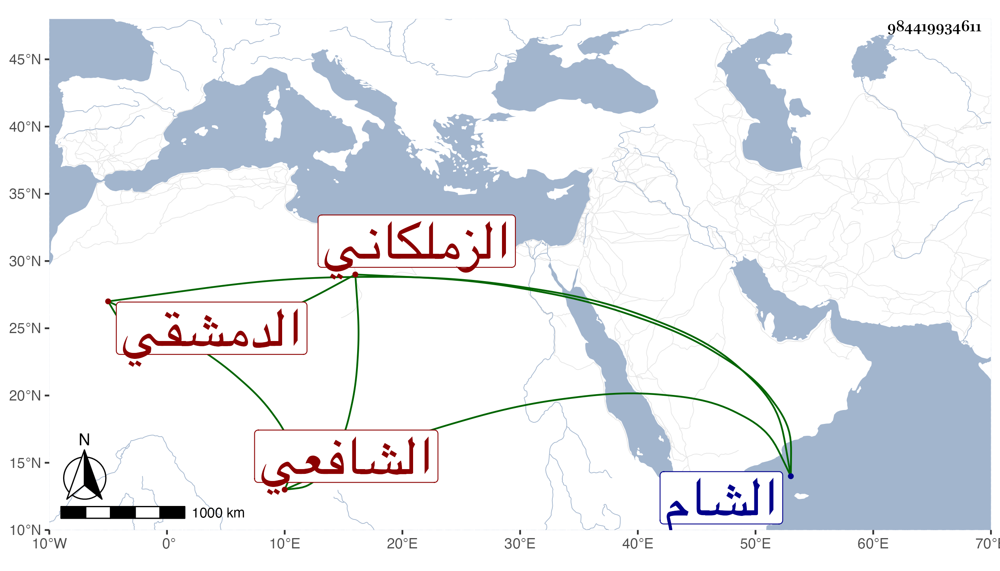

0902Sakhawi.DawLamic.ITO20230111-ara1.EIS1600.984419934611
Biography ID: 984419934611
81
أحمد بن علي بن عيسى بن علي بن عيسى بن عبد الكريم الشهاب الزملكاني ثم الدمشقي الشافعي ويعرف بابن السديدارة بضم السين وفتح الدال المهملتين ثم تحتانية . ولد سنة سبعين وسبعمائة فيما كتبه بخطه ببعض الاستدعاءات ، ورأيت من قال سنة ثمان وستين وأن أباه مات سنة خمس وسبعين وهو ابن سبع سنين وسمع في صغره من مشايخ بلده وشهد على القضاة قديما وتعين بعد موت السويدي وابن الحساني إلى أن صار هو ورفيقه الشمس الأذرعي عين شهود الشام بل عمل نقيب الشافعي هناك ، مع شح زائد حتى على نفسه . مات في يوم الجمعة سادس جمادى الأولى سنة ثمان وأربعين وخلف من النقد شيئا كثيرا .
